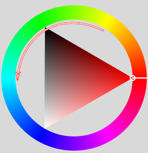
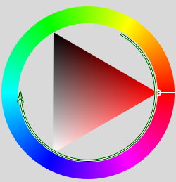

可停靠对话框→渐变
快捷键：Ctrl+G
截图1 可停靠对话框→渐变
(截图时前景色为黄色 R=G=100,B=0，背景色为青色 R=0,G=B=100)
渐变对话框用来管理渐变，其管理方式与 笔刷对话框 管理笔刷的方式基本相同。
相同的部分请参考笔刷对话框，我们在这里仅说明不同的部分。
填充渐变及渐变工具的详细操作方法，请参考GIMP工具箱→渐变工具。
渐变对话框说明
渐变对话框中有很多渐变，点击其中一个，即可设置其为当前活动渐变。
前六个渐变稍微有点特殊。
第一个渐变是自定义渐变，您随时可以在 渐变编辑器中修改；如果您用这个渐变填充了某个选区，但还没有切换工具，那么渐变编辑器中的修改会实时反映在选区中。
第二到第六这五个渐变永远使用前景色和背景色，当工具箱中的前景色/背景色改变时，这五个渐变会同步改变。
第二个渐变是从前景色到背景色的硬过度，中间显示明显的边界。
第三个渐变是从前景色到背景色，中间的过渡颜色为沿HSV色相环逆时针移动鼠标所经过的所有颜色。(与第四个渐变色相互补)
截图2 HSV色相环 (逆时针)
6.1. 截图1 可停靠对话框→渐变 中使用的前景色为黄色，背景色为青色。6.2. 我们在 截图2 HSV色相环 (逆时针) 中先找到黄色(请查看圆环，不要看中间的三角)，黄色位于圆环的右上方向。6.3. 从右上方黄色为起始点开始沿圆环逆时针移动鼠标，直到遇到 截图1 可停靠对话框→渐变 中使用的背景色青色为止。6.4. 截图2 HSV色相环 (逆时针) 中青色位于圆环的左侧中间位置。6.5. 从色相环的右上黄色到左中青色，颜色变化依次为黄色→绿色→青色。(逆时针)6.6. 得到的结果就是 截图1 可停靠对话框→渐变 中的第三个渐变：前景到背景(HSV逆时针色相)。
第四个渐变是从前景色到背景色，中间的过渡颜色为沿HSV色相环顺时针移动鼠标所经过的所有颜色。(与第三个渐变色相互补)
截图3 HSV色相环 (顺时针)
7.1. 截图1 可停靠对话框→渐变 中使用的前景色为黄色，背景色为青色。7.2. 我们在 截图3 HSV色相环 (顺时针) 中先找到黄色(请查看圆环，不要看中间的三角)，黄色位于圆环的右上方向。7.3. 从右上方黄色为起始点开始沿圆环顺时针移动鼠标，直到遇到 截图1 可停靠对话框→渐变 中使用的背景色青色为止。7.4. 截图3 HSV色相环 (顺时针) 中青色位于圆环的左侧中间位置。7.5. 从色相环的右上黄色到左中青色，颜色变化依次为黄色→红色→粉色→蓝色→青色。(顺时针)7.6. 得到的结果就是 截图1 可停靠对话框→渐变 中的第四个渐变：前景到背景(HSV逆时针色相)。
第五个渐变是从前景色到背景色，只有两种颜色，RGB模式。
第六个渐变是从前景色到到透明，不使用背景色。
如果您有新的渐变定义文件，可以拷贝到个人渐变文件夹中，然后点击渐变对话框底部的刷新按钮即可使用。
(个人渐变文件夹：请参考首选项→文件夹⇒各种文件夹及选项)
渐变对话框弹出菜单
部分命令的功能与 笔刷对话框相同，请参考笔刷对话框，下面仅说明不同的部分：
渐变弹出菜单
保存为POV-Ray：以POV-Ray 3D光线追踪程序使用的格式保存渐变。
自定义渐变：创建一个填充所选渐变的图像。您可以设置图像的宽度和高度以及渐变方向。
保存为CSS{Save as CSS}：这其实是一个CSS3线性渐变生成器，它允许您把当前渐变保存成一个CSS3代码片段。这个代码片段是一个文本文件：您可以在HTML文件相关的样式表中使用，在Firefox、Chrome或Safari浏览器中打开HTML文件时获得一个渐变背景。另外，这个CSS3代码段也可以在SVG文件中作为渐变使用。